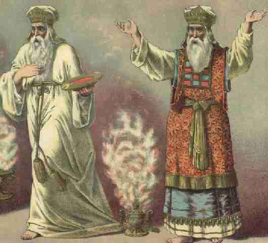

Wednesday, April the 5th, 2006
back to: title, date or indexes

Here is Rex Tint's magnificent hand-coloured mezzotint of dance duo Basil and Guido accompanying sixties pop demigods Dave Dee, Dozy, Beaky, Mick and Tich in a performance of the ballet Dejected Moorhens. Mr Tint captured the precise moment when the loveable popsters were obliterated in a puff of eldritch fumes from a thurible.
DETOURS : BibliOdyssey … Playmobil Photo-Stories … Biblical Curse Generator